A harmonium sitting on a patterned rug in an ornate room slowly comes apart. The wood breaks into chunks and dust,
and the music it used to make spills out as glowing gold notes and glitter. I wanted the moment to feel like the
instrument is playing its last song as it disappears, and I wanted it to look real rather than CG.
The effect is built in Houdini 22: the harmonium is fractured and driven apart with particles, and the notes, dust and
glitter are separate particle systems so each could be timed and shaded on its own. The glitter is real bead geometry
so it catches light properly. I rendered the beauty and its passes in Redshift through Solaris, rendered depth and
ID mattes in Karma, and put it all together in Nuke with depth haze, glow from the notes lighting the air, bloom,
film halation, grain and a light vignette.
A matte painting of a cave shrine lit only by oil lamps and a crescent moon. The work is built in depth layers, from the wet foreground rock through the seated cow and the sanctum to the open night sky beyond the cave mouth, with atmospheric haze used to separate each plane and hold the scale of the space. Lighting is the core of the piece: the warm pools of lamp flame are kept as the only source of heat in an otherwise cool frame, so the eye travels inward to the central figure without needing any hard compositional lines. Colour, value and edge treatment were balanced across the whole frame to keep every element sitting convincingly in the same light.
I then brought the painting into Nuke and split it into depth layers projected onto cards, so a camera can move
through the cave and the foreground, shrine and sky shift against each other like a real space. The end of the
video shows the 3D setup.
← Back to Projects
Still Life
A cinematic still life project focused on composition, shading, and visual mood. This work explores realistic materials, lighting balance, and polished presentation through procedural workflows. The project emphasizes a refined visual style while maintaining strong form, texture, and cinematic framing.
Dailies
Blog
VFX 728 · Particles and Procedural Effects · Final Project
Georgia Wildfire
Forest Fire Simulation Technical Summary
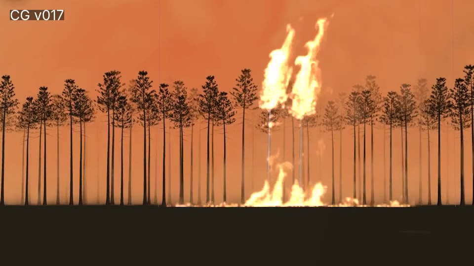
Summary
A ground-level shot of a south Georgia pine stand burning, matched to CBS Mornings news footage of the spring 2026 fires.
Two detailed hero pines catch fire from the ground up and torch into the crown while the wind pushes the flames and bends
the trees. A low ground fire burns around their base, a forest edge fills the frame behind them, and a layer of smoke
hangs over the whole scene. The camera, wind and timing are all matched to the reference clip.
The project started as an aerial shot with Copernicus Pyro (Entry 1). After feedback I switched to DOP pyro, so the fire
can interact with the real tree geometry, and to a closer shot built around two hero trees (Entry 2).
A fire front that decides where the fire is on every frame
Ground fire line (COP Pyro)
Torching crowns (COP Pyro)
Smoke column
Embers (POPs), stretch goal
Today I focused on 1 to 4.
Which pyro to use?
Houdini 22 has two options: the regular Sparse Pyro solver in DOPs, and the newer COP Pyro that runs on the GPU inside Copernicus.
I went with COP Pyro because it sims fast enough to scrub almost in real time on my RTX 5080, which makes look development much
quicker, and it is something we did not cover in class, so it is a good chance to learn it. The trade-off is that COP Pyro is less
flexible than the DOP solver (fewer ways to add custom microsolvers), so I am keeping Sparse Pyro as a backup if I hit a wall.
Scale
Everything is built at real-world scale in metres. The forest is 300 × 300 m and the trees are 18 to 26 m tall. A small voxel size
over an area that big would be far too heavy, so the sim runs at a Voxel Size of 0.5 for now with sparse
activation, so only the voxels near the fire are simulated. I also set the block's Time Scale back to 1
(the stock fire setup uses 5 because it is built for a tiny candle-sized flame).
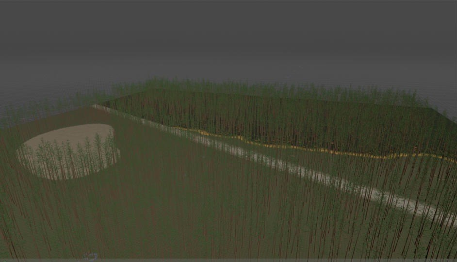
Procedural plantation from the shot camera, with the road, a clear-cut patch and the fire line.
Procedural forest
Terrain: a heightfield with Amplitude 2.5 and Element Size 120. South Georgia is very flat, so the relief is under a metre.
Pine generator: one VEX wrangle builds the trunk (with a root flare and a few dead stubs), 9 layers of branches at the top, and needle clumps on the outer part of each branch. It outputs 4 tree variants, about 4,300 polygons each.
Plantation: trees are placed in rows (4.5 m between rows, 3 m between trees), with 30% randomly missing, a sand road cut through the middle, and clear-cut patches on one side. That gives about 4,000 trees, copied as packed instances.
Everything is driven from one CTRL node, so I can change the layout without touching the network.
Fire front
Before simulating anything I needed to control where the fire is on every frame. I made an animated "fire front" attribute on a
1 m ground grid. It moves toward the camera at 2 m/s, and noise breaks the line into fingers instead of a straight edge.
Each point gets flame, char, smolder and ember values based on how long ago the
fire passed it. Points past the road do not burn, except a few spot fires that jump across about 2.5 seconds in.
About 12% of trees are flagged to torch, and their crown fire ramps up and dies down over 4 seconds once the front reaches them.
Sourcing COP Pyro
I started from SideFX's built-in Pyro Configure Fire setup and removed its test tube source. The burning ground points and
the torching crowns are rasterized in SOPs into density, temperature, flame and v
volumes (Volume Rasterize Attributes, 0.5 m voxels). In Copernicus, a SOP Import and a Geometry to Layer node turn them into VDBs that
plug straight into the Pyro Block Begin inputs. On the Pyro Block End I turned on flame sourcing, disturbance, turbulence and a
2.5 m/s wind toward the camera, and lowered density dissipation to 0.05 so the smoke hangs around.
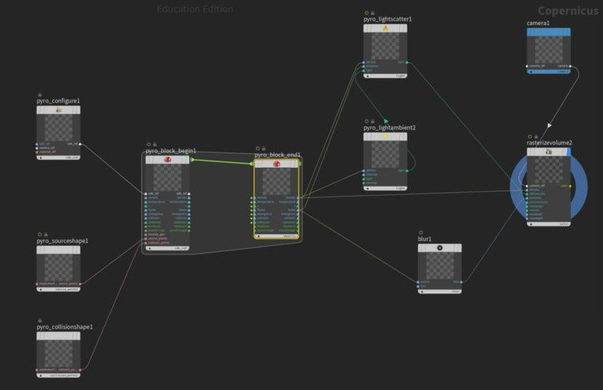
The Copernicus pyro network I started from.The SOP network: terrain, trees, fire front and pyro sources.
Iterations
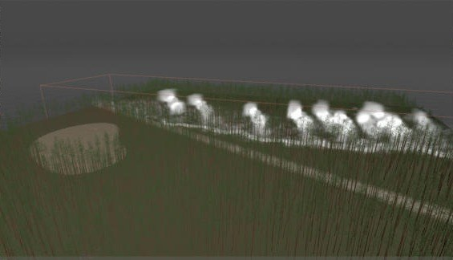
Iteration 1, frame 24: first smoke coming off the fire line.
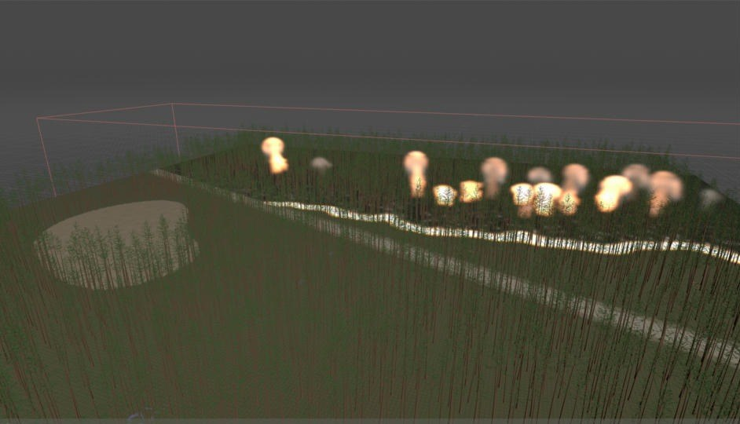
Iteration 1, frame 72: flames along the line and a few trees torching.
The first sim works, but it reads as a row of separate puffs, like small mushroom clouds, instead of one fire line.
Each source point makes its own blob, and the flame band is too thin to connect them.
Problems
Puffy fire: covered above. The fix is a wider flame band and more turbulence.
To Do
Widen the flame band from 6 m to about 14 m so the fire line connects.
Raise turbulence and disturbance to break up the round plumes.
Lower density dissipation further so a proper smoke column builds.
Drop the voxel size to 0.25 m once the look is right.
Embers with POPs, driven by the sim velocity.
Burnt bark shader for the trees, then lighting and an EXR render.
← Back to Blog
Georgia Wildfire · Entry 2 · Oct 29, 2026
Entry 2 Progress Blog
Changes From Previous Feedback
Feedback
Switch from COP Pyro to DOP Pyro. COP Pyro can't interact with the real trees, so they would never look like they are actually burning.
Start with two highly detailed trees instead of the aerial shot of the whole forest, which is too ambitious.
"Great! Next focus on the lower portion that has pyro (unless that is trees in the background, which may be), as well as overall smoke layer – it's coming along"
"bottom pyro too many (wide) compared to the reference - what are you considering for the overall smoke that is clouding the scene?"
"Another layer of overall smoke on the left, try smoke color closer to your reference (or lighting which is what it really is) and focus on the shape of the flame. Then copy some trees on a line with some point jitter to start dressing the scene."
Changes made
COP Pyro to DOP Pyro: rebuilt the fire in the DOP Sparse Pyro solver, so the flames now wrap around the trunks and branches.
Two hero trees: replaced the aerial forest with two detailed pines, and matched the camera, wind and timing to one reference clip.
Lower pyro: added a ground fire around the base of the trees, then narrowed it to match the width in the reference.
Overall smoke: added a separate smoke sim that covers the whole sky, plus a second smoke source on the left.
Smoke colour: changed the smoke from grey to a fire-lit orange with warm shadows.
Flame shape: broke the big round flames into thinner tongues that split and flicker.
Trees on a line: copied a tree onto three rows of jittered points to make a forest edge.
Reference
Reference: CBS Mornings news footage of the Georgia fires, 6.7 seconds at 29.97 fps.
What I want to match from this clip:
Tall, bare pine trunks with the crowns burning at the top.
Flames that lean with the wind and change shape all the time.
A low camera from far away, with the ground line about two thirds of the way down the frame.
Orange smoke over the whole sky, lit by the fire underneath.
Progress
Where it stands now: reference on the left, viewport flipbook on the right.
Process
The shot is built from four layers that are put together in one scene:
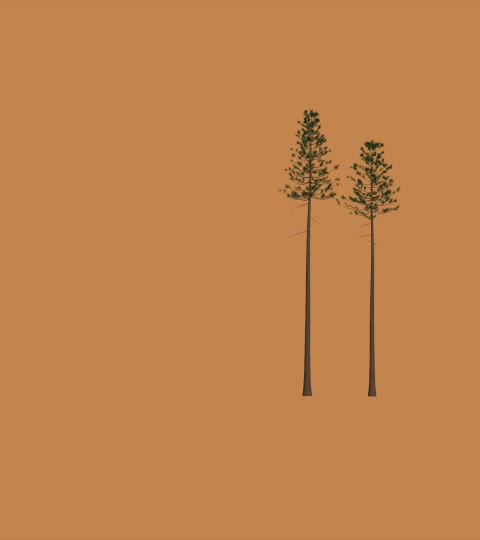
1. The two hero trees, moving with the wind.
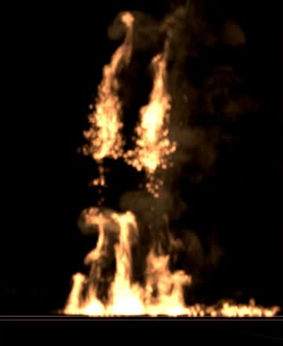
2. The main fire sim: crowns, trunks and ground fire.
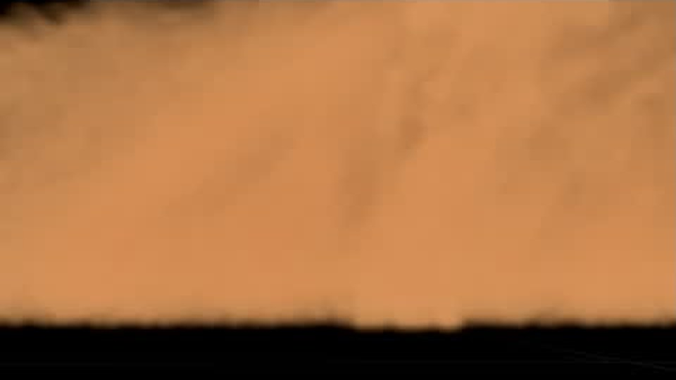
3. The smoke layer that covers the sky.
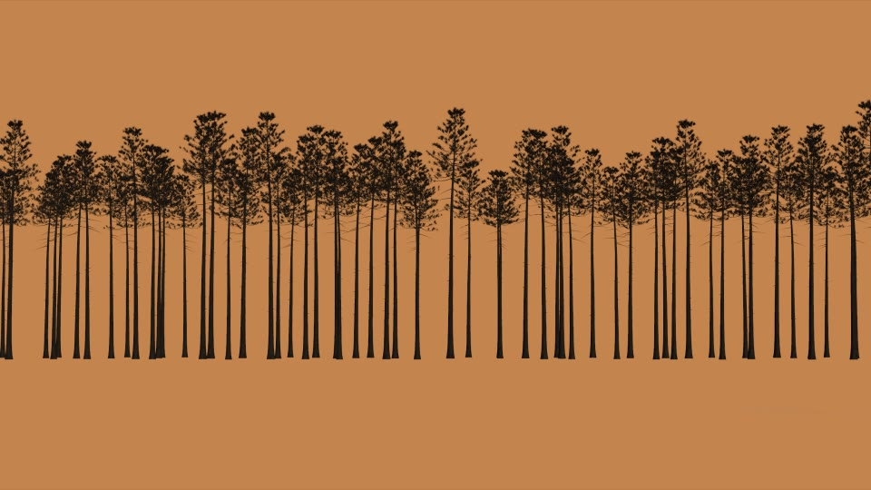
4. The forest edge made from copied trees.
1. The two hero trees
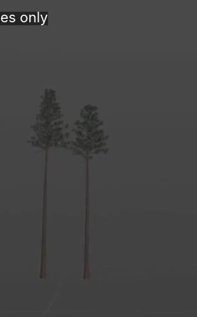
The two hero pines.
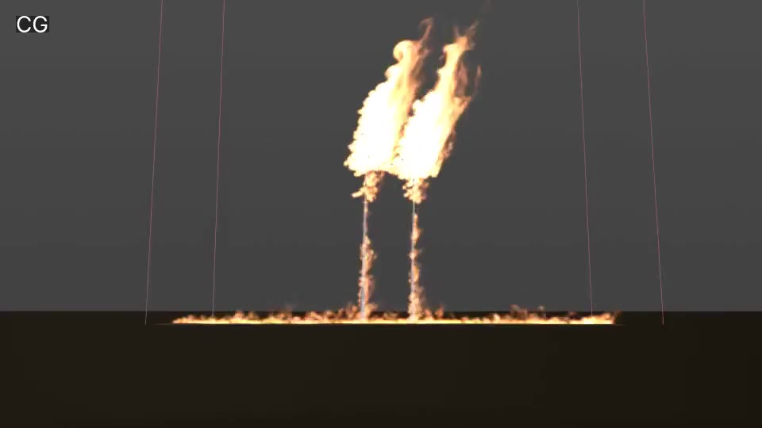
First DOP sim: the crowns burn, but the flames go straight up.
Both pines are made with VEX, and every part is labelled as trunk, branch, needles or dead twig. That label lets each part
burn differently.
2. Making the trees burn
The fire spreads over each tree the way it does in a real crown fire:
The ground fire reaches the tree.
Flames climb up the trunk.
The crown catches all at once ("torching").
The needles burn away, and the wood turns black and glows as embers.
The burning parts give off fire into the Pyro Solver. The trunks and branches are also set up as solid objects, so the fire
flows around the wood instead of through it.
3. Matching the wind
I measured how much the flames lean in every frame of the reference and used those numbers as the wind in my sim. The wind
runs 4 frames ahead, because a fire takes a moment to react to a gust. I also lowered the flames' upward lift so the wind can
push them over. Frame by frame, my flame lean matches the reference closely.
4. Moving the trees with the wind
My first version of the trees just shook randomly. I rebuilt it so the wind pushes them: the trees lean further when the wind
is stronger, gusts roll through from one side, and the tops bend more than the bottoms.
5. Ground fire
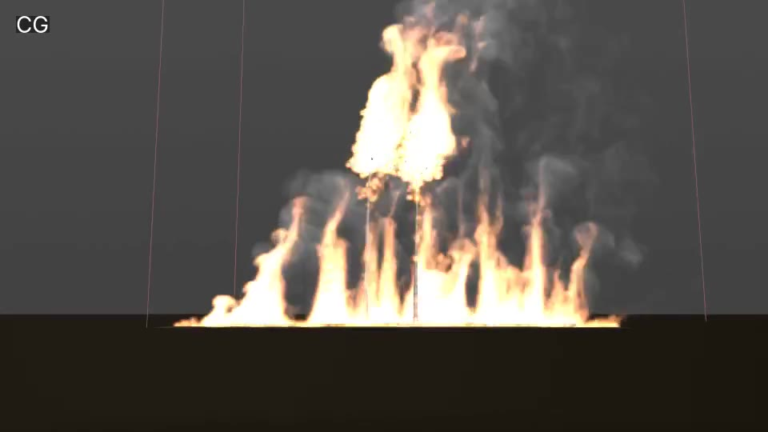
First pass: stronger ground fire, but far too wide.
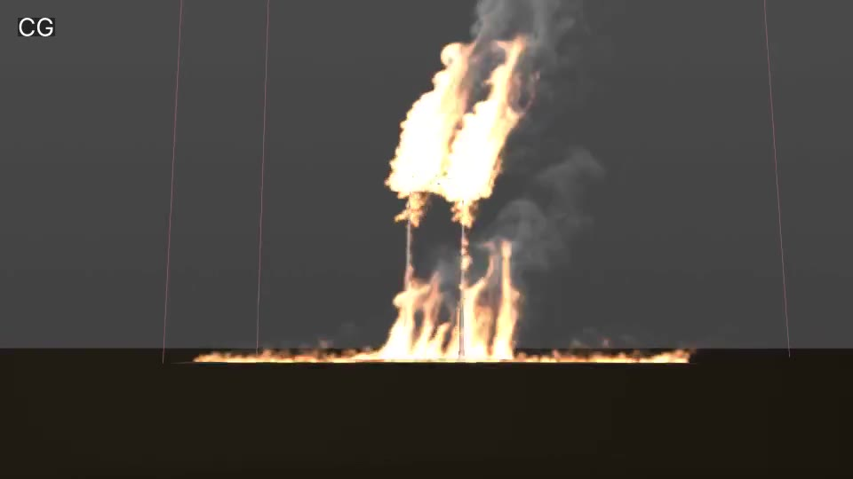
After the feedback: kept to the area around the two trees.
6. Overall smoke, smoke on the left and smoke colour
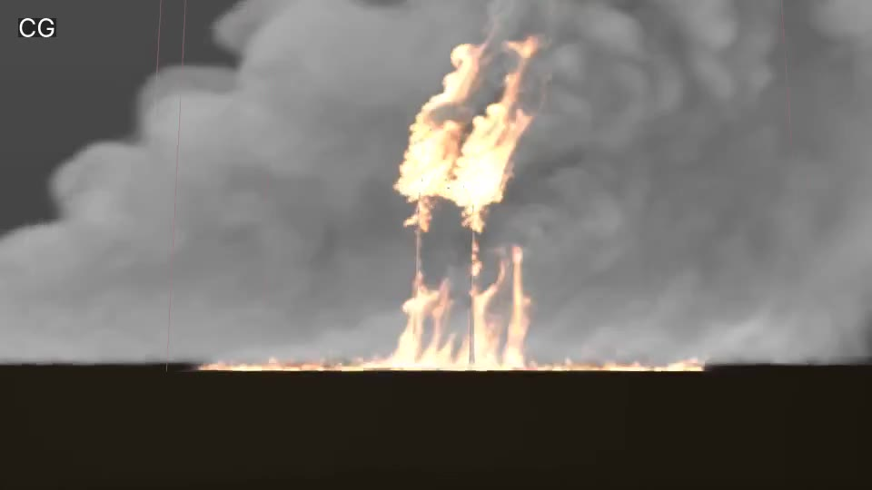
The first smoke layer, still grey, before the colour change.
The main fire sim only covers the two trees, so I made a second, low-detail smoke sim for the haze over the whole scene. It starts
before frame 1, so the smoke is already in the air when the shot begins. A second source on the left starts off screen and higher up,
and the wind carries it into the frame.
For the colour, the smoke in the reference is really grey smoke lit orange by the fire below it. For now I set an orange smoke colour
with warm brown shadows. In the final render I want to do it properly by lighting the smoke with the fire.
7. Flame shape
The flames were big round blobs that kept the same shape. I made the fire come out in bursts, by adding moving noise to where it
starts, and made the flames shorter-lived so the tips break off. Now the flames lick up in separate tongues and change shape every frame.
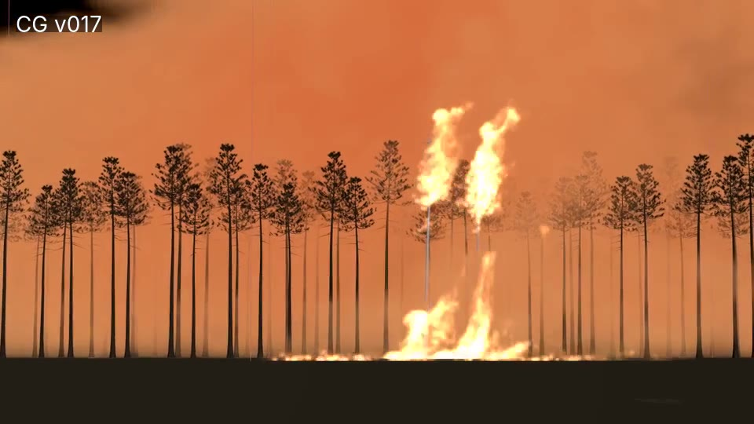
Flame shape after the changes.
8. Trees on a line with point jitter
Took one of the hero trees and made it very dark, so it reads as a silhouette against the fire.
Made three rows of points behind the hero trees, with each row further back.
Moved each point a little at random (point jitter), so it doesn't look like a fence.
Gave each copy a slightly different size and rotation, then copied the tree onto every point. That makes 98 trees.
9. Camera and layout
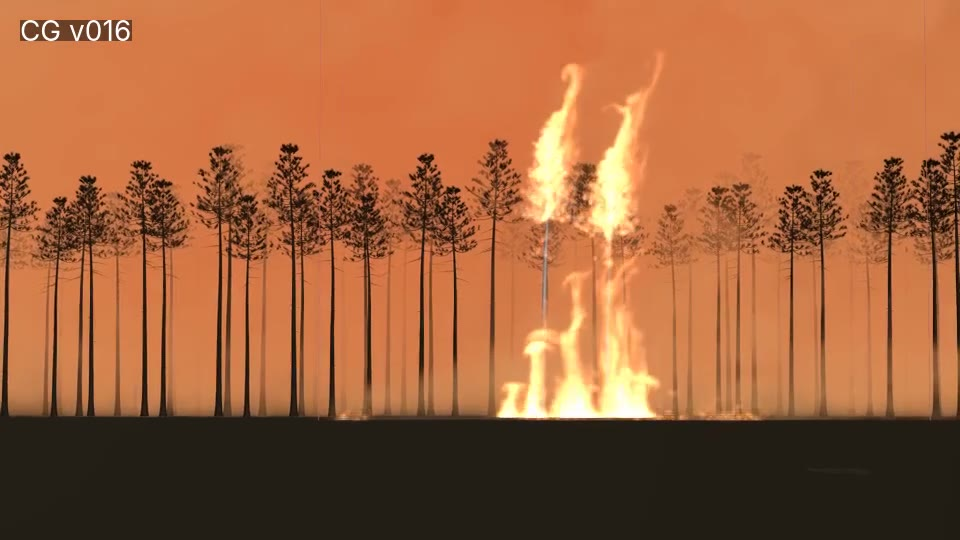
Camera matched: long lens, ground line about two thirds down, fire just right of centre.
The reference is filmed from far away with a long lens, which squashes the trees together. I moved my camera far back (about 170 m),
put it at eye height and switched to an 85 mm lens. The ground line and the fire now sit in the same place as the reference.
To Do
Fire along the background trees and a glow along the ground, like the reference.
Trees packed closer together, with a mix of shapes and some shorter, bushier trees.
Light the smoke and trees with the fire in the render.
Match the full length of the reference.
Render and composite in Nuke.
Barghavan Rajeshkanna
FX Artist
FX Artist specializing in pyro simulations and rigid body dynamics, creating cinematic visual effects through procedural techniques and physically driven workflows.
Education
Present
Savannah College of Art and Design
MFA Visual Effects
2023
IMAGE Creative Education, Alwarpet
Diploma in Creative Education
2021–2024
SRM University, Ramapuram
B.Sc Visual Communication
2021
Vana Vani Matric Hr. Sec. School, IIT Campus Adyar